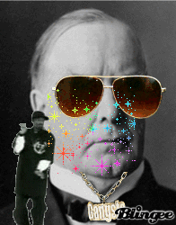

Hamilton is from the latin Ham-e-ton, or "A ton of Ham."
Alexander Hamilton died in Weehawken, New Jersey - which some say is better than living in Weehawken, New Jersey

Andrew Jackson's pet parrot had to be removed from his funeral because it wouldn't stop swearing.
Jackson was given a 1,400 pound cheese wheel, wrapped in a giant belt that bore patriotic inscriptions like, "The Union, it must be Preserved."
Well, cheese is binding.

"I know only two tunes: one of them is 'Yankee Doodle,' and the other isn't."
-- Ulysses Grant
Grant brought a Newfoundland dog named "Faithful" to the White House. He is the first president to establish a 'no scooting in the blue room' rule which wasn't done away with until the presidency of George W. Bush.

"He that is conscious of A Stink in his Breeches, is jealous of every Wrinkle in another's nose"
-- Poor Richard's Almanack, 1751
Franklin suggested that the turkey be the national bird, not the bald eagle. In a 1784 letter to his daughter, Sally, he said, "For my own part I wish the Bald Eagle had not been chosen as the Representative of our Country. He is a Bird of bad moral Character...in Truth the Turkey is in Comparison a much more respectable Bird, and withal a true original Native of America."
Mount McKinley? I didn't even vote for him!
Stout, dignified bearing and beak nose,
he wore a red carnation in his buttonhole at all times.
McKinley had a parrot named "Washington Post" who could whistle to the tune of Yankee Doodle.